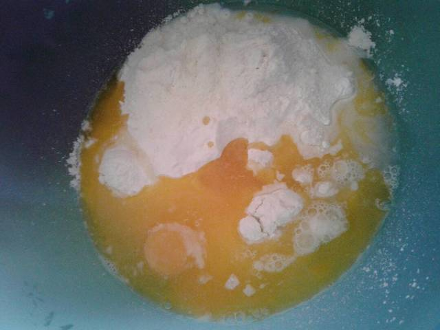

Resep Kue Maryam
Bahan-bahan:

- 250 gr tepung terigu
- 1 butir telur
- 3 sdm margarin, lelehkan
- 100 ml air hangat
- 2 sdm susu bubuk
- 1/2 sdt garam
- margarin leleh untuk olesan
- minyak untuk merendam
Lagkah-langkah
- Campur semua bahan roti jadi satu

- Uleni sampai kalis (aku pake tangan) jangan takut jika adonan lengket ya, lumuri tangan sesekali dengan tepung (tapi jangan menambahkan tepung) uleni terus sampai adonan kalis.

- Kalisnya roti canai tidak sekalis adonan roti ya, kira2 seperti ini sudah cukup.